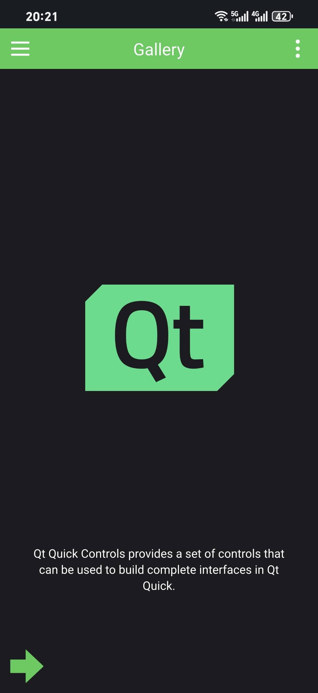

Setting up Qt 6 for Android Development on Mac
Setting up Qt 6 for Android Development on Mac
Configure Android Environment
You can also configure it using Android Studio. The advantage is the use of a GUI, although it takes up a significant amount of space.
Configure JDK
Here, you can directly download it using brew.
1 | brew install openjdk@17 |
Note that for Apple Silicon, the default path for the JDK downloaded via brew is
1 | /opt/homebrew/opt/openjdk@17 |
You will need this path for later use. As for setting environment variables, add the following configuration to your .bashrc file:
1 | export JAVA_HOME="/opt/homebrew/opt/openjdk@17" # For Apple Silicon |
Configure Android Environment via Creator
If your network conditions allow, you can use Qt Creator to automatically complete the installation.
Go to Devices - Android in Qt Creator.

In Qt Creator, set the JDK location to the path where you installed the JDK via brew. Then, click on the SDK settings below. Qt Creator will detect and begin automatically installing any missing packages.

Follow the instructions to complete the setup.

The result is:


Here, it’s important to note the correspondence between the JDK version and the cmdline tools. Qt Creator actually controls the Android SDK through the cmdline tools, but the cmdline tools are highly dependent on the JDK version. If your version is incorrect, you may encounter issues like these.
Additionally, Qt Creator also configures OpenSSL in the process.
Manually Configure Using the sdkmanager Command Line Tool
If the installation via Qt Creator fails, you can also complete the installation manually. This section serves as a guide, but the official documentation is already quite comprehensive. Visit the Android official site and download only the command line tools package.

For detailed instructions on configuring the command line tools, see sdkmanager | Android Studio | Android Developers.
The main steps are as follows:

My path is as follow
1 | /Users/wadaxiyang/Library/Android/sdk |

Through similar commands, you can download the corresponding platform-tools, etc. This process is essentially the same as what Qt Creator does.
1 | ./sdkmanager "platform-tools" "platforms;android-33" --proxy_host=127.0.0.1 --proxy_port=9908 --proxy=http |
Configure Android Virtual Machine
In fact, Qt Creator can also directly configure an Android virtual machine.

Install image


Connfig the AVD

And start AVD

Deploy to AVD
The installation process for Qt for Android is omitted here. You can refer to macOS Install Latest qt6_qt6 for Mac - CSDN Blog, which is well-written.
Use the official example to verify the setup.


Set up the emulator, noting that you need to start the AVD first.

Running result

Deploy to a Physical Device
Deploying to a physical device via USB is very similar to using AVD. Here, we mainly focus on signing the apk to enable direct installation.

Follow the prompts to create and select accordingly.

Afterwards, build to generate the apk in the corresponding directory. Note that the version I am providing here is the release version.

Result
